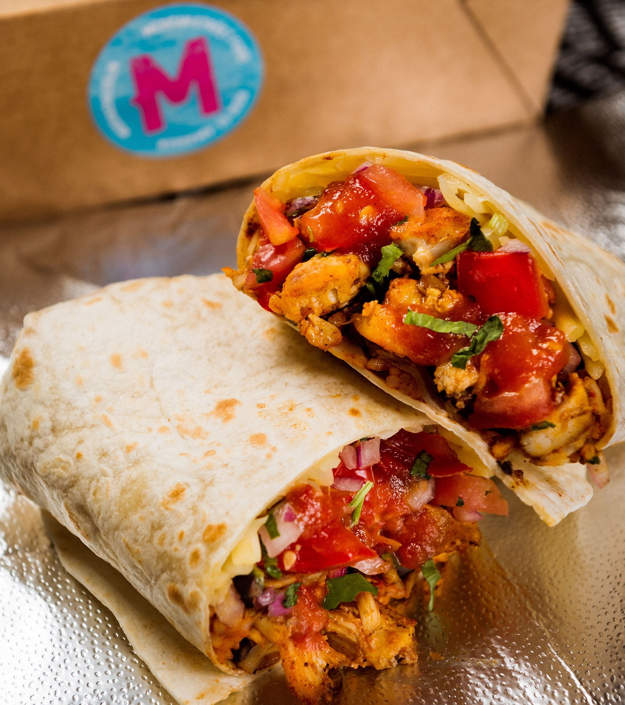

Recipe Chicken Burrito

Dish 2: Chicken Burrito
Specialty: A hearty burrito featuring tender chicken, fresh vegetables, and a mix of bold
flavors, reflecting the Tex-Mex style.
Ingredients:
- 2 cups cooked and shredded chicken (grilled or roasted)
- 1 cup cooked white or brown rice
- 1/2 cup black beans (cooked)
- 1/4 cup diced tomatoes
- 1/4 cup diced onions
- 1/4 cup chopped fresh cilantro
- 1 cup shredded cheddar cheese
- 1/2 cup sour cream
- 1/2 cup guacamole
- 4 large flour tortillas
- 2 tbsp taco seasoning
- 1 lime (juiced)
- Hot sauce (optional)
Instructions:
-
Prepare the Chicken Filling:
- Mix shredded chicken with taco seasoning and lime juice.
- Warm the chicken in a skillet for 3-5 minutes.
-
Assemble the Burritos:
- Warm tortillas slightly for easy folding.
- Layer rice, black beans, chicken, corn, tomatoes, onions, cilantro, cheese, sour cream, and
guacamole in the center of each tortilla.
-
Wrap the Burritos:
- Fold the sides in and roll tightly.
-
Toast (Optional):
- Toast the burrito in a hot skillet for 2 minutes on each side for extra crunch.
-
Serve Hot
- With your favorite salsa or hot sauce.
Homepage